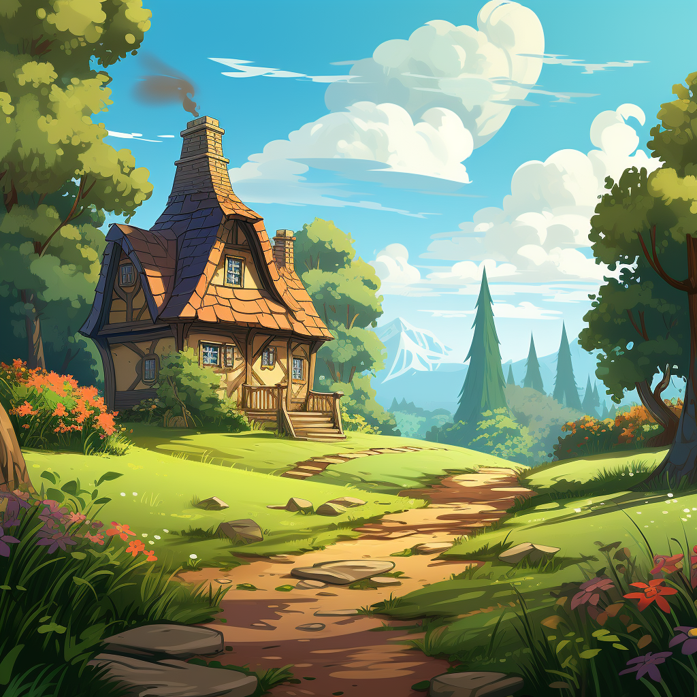

Once upon a sunny day, two siblings, Lily and Ben, were off on an adventure to visit their grandparents' cozy countryside home. They were thrilled about spending time with Grandma and Grandpa, especially because they always had fun surprises waiting for them.


As they stepped through the front door, the sweet aroma of something delicious filled the air. "Mmm, what's that yummy smell?" Lily asked, her nose twitching with curiosity.
"It smells like something sweet and tasty," added Ben, rubbing his hungry tummy.
Their grandmother, with a warm smile, welcomed them into the kitchen where she was busy preparing something special. "Hello, my little sweethearts! I'm making some treats for you both," she said, her eyes twinkling with delight.
Lily and Ben eagerly joined their grandmother at the kitchen counter, ready to help. They saw bowls of flour, butter, and eggs, but something was missing. "Grandma, where's the sugar?" asked Ben, furrowing his brow in confusion.
"Yeah, Grandma, how can we make sweets without sugar?" Lily chimed in, equally puzzled
Grandma chuckled softly and reached for a bottle of golden syrup. "Ah, my dears, we're using something just as sweet, but much healthier than sugar. We're using dates!"
Lily and Ben's eyes widened with surprise. "Dates? But how can they make things sweet like sugar?" asked Ben, his curiosity piqued.
Grandma began to explain as she showed them the plump, sticky dates. "Dates are nature's sweet gift to us. They're packed with natural sugars and loads of nutrients like fiber, vitamins, and minerals. They're not just sweet; they're super healthy too!"
"Wow, really?" Lily exclaimed, amazed.
"Yes, indeed! Dates are high in fiber, which helps keep our tummies happy and our digestion smooth. Plus, they're loaded with vitamins and minerals like potassium, magnesium, and vitamin B6, which are all important for our bodies to stay strong and healthy," Grandma explained, her eyes twinkling with wisdom.
Excitedly, Lily and Ben watched as Grandma chopped the dates into tiny pieces and mixed them into the batter. Together, they formed the dough into delicious cookies and cute little cakes.
As the treats baked in the oven, the kitchen filled with the irresistible scent of freshly baked goods. Lily and Ben couldn't wait to taste them.
When the timer dinged, Grandma carefully took out the golden-brown treats and let them cool on the counter. With eager anticipation, Lily and Ben each took a bite.
"Mmm! These are so yummy!" exclaimed Lily, her face lighting up with delight.
"And they're sweet, just like sugar!" added Ben, with a big grin.
Their grandmother smiled proudly. "See, my little ones? Dates are not only sweet, but they also make our treats healthier and even tastier!"
From that day on, Lily and Ben learned to appreciate the sweetness of dates and how they could enjoy delicious treats without the need for refined sugar. And every visit to Grandma and Grandpa's house became an exciting adventure filled with sweet surprises and tasty delights, all thanks to the magical powers of dates.

You finished the story.
It's time for a Quiz !